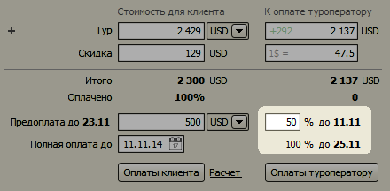
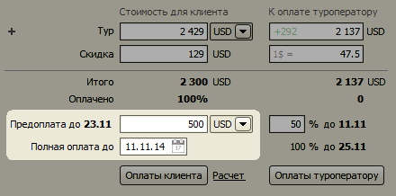
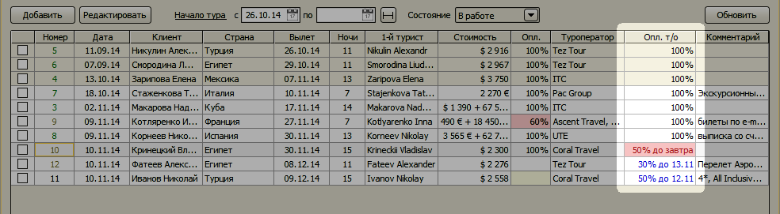
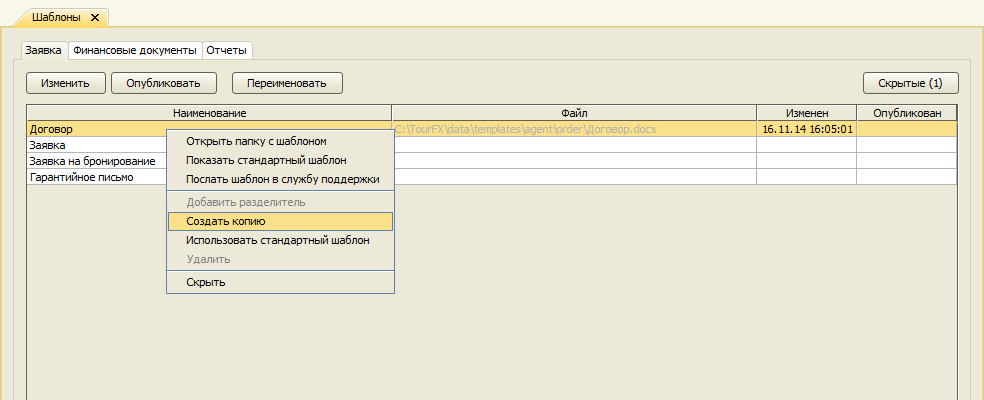
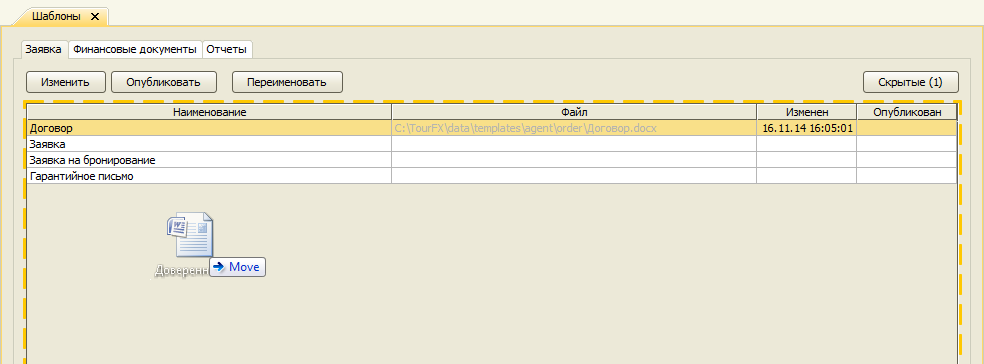
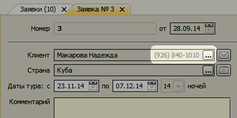
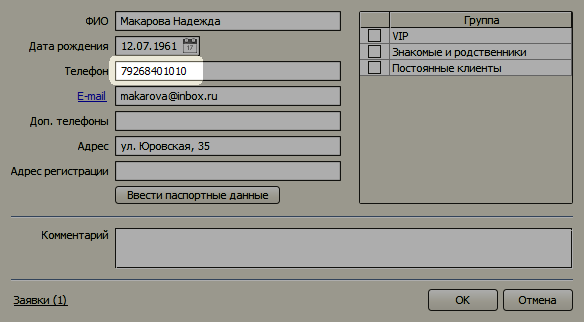
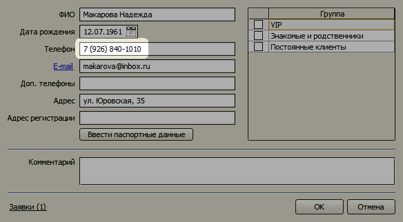

Измения в версии 2.4
- Контроль сроков оплат туроператору
- Обновленная форма управления шаблонами документов
- Автоматическое обновление финансовых гарантий туроператоров
- Номер телефона клиента на форме заявки
- Автоформатирование телефонного номера
- Функция для вывода полного наименования формы собственности
Контроль сроков оплат туроператору #touroperator-payment-dates
На форме заявке добавлено несколько полей, позволяющих установить сроки оплат туроператору и процент предоплаты.

Даты предоплаты и полной оплаты клиента, выводящиеся в договоре, задаются отдельно.

В журнале заявок отображается информация о предстоящих платежах. Красным цветом выделяются оплаты, которые необходимо
произвести в ближайшие 2 дня.

Обновленная форма управления шаблонами документов #templates
Форма поменяла вид. Добавилось несколько функций для шаблонов документов заявки, доступных из контекстного меню:
просмотр стандартного шаблона, отправка шаблона в службу поддержки, вставка разделителя, упорядочивание.

Теперь в качестве шаблона может выступать любой документ Microsoft Word (формат DOCX) или Microsoft Excel (формат XLS).
(Форматы RTF, DOC и XLSX не поддерживаются!) Достаточно перетащить файл шаблона в список и его можно выводить на печать
из заявки.

Можно определить порядок следования шаблонов в меню Печать в заявке, перемещая строки в таблице с помощью мыши.
Автоматическое обновление финансовых гарантий туроператоров #fg-auto-update
Программа еженедельно автоматически синхронизирует с реестром туроператоров информацию о финансовых гарантиях.
Номер телефона клиента на форме заявки #client-phone
Телефон клиента теперь показывается прямо на форме заявки.

Автоформатирование телефонного номера #phone-auto-format
В справочниках клиентов и туристов можно ввести телефонный номер одними цифрами.

При переходе в другое поле или сохранении формы номер будет автоматически отформатирован.

Функция для вывода полного наименования формы собственности
Добавлена функция ПолноеНаименование() для использования в шаблонах. Например, если в справочнике реквизитов
наименование фирмы введено как ООО "Ромашка", в документах можно вывести Общество с ограниченной отвественностью "Ромашка"
с помощью тега [ПолноеНаименование(Фирма)].
Остались вопросы? Напишите нам на e-mail